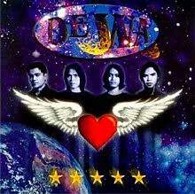
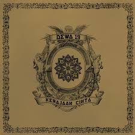

| 1 |
|
Dewa 19 |
1992 |
"Kangen", "Kita Tidak Sedang Bercinta Lagi", "Bayang-Bayang", "Selamat Ulang Tahun", "Satu Hati (Kita Semestinya)", "Aku Milikmu" |
| 2 |
|
Format Masa Depan |
1994 |
"Tak ‘Kan Ada Cinta Yang Lain", "Aku Di Sini Untukmu", "Aku Cinta Kau dan Dia", "Bukan Rahasia", "Sik Sik Sibatumanikam", "Cukup Siti Nurbaya" |
| 3 |
|
Terbaik Terbaik |
1995 |
"Kirana", "Cukup Siti Nurbaya", "Satu Hati (Kita Semestinya)", "Restoe Boemi", "Bunga", "Cinta ‘Kan Membawamu Kembali" |
| 4 |
|
Pandawa Lima |
1997 |
"Kamulah Satu-Satunya", "Cinta Adalah Misteri", "Aku Di Sini Untukmu", "Cemburu", "Manusia Biasa (A Tribute to Ahmad Fanani)", "Sahabat" |
| 5 |
 |
Bintang Lima |
2000 |
"Roman Picisan", "Dua Sejoli", "Risalah Hati", "Separuh Nafas", "Cemburu", "Kosong", "Pupus", "Lagu Cinta", "Sayap-Sayap Patah", "Cinta Adalah Misteri" |
| 6 |
|
Cintailah Cinta |
2002 |
"Arjuna", "Kasidah Cinta", "Cintailah Cinta", "Angin", "Dewi", "Bukan Rahasia", "Satu", "Swear", "Live On" |
| 7 |
|
Laskar Cinta |
2004 |
"Laskar Cinta", "Atas Nama Cinta", "Pangeran Cinta", "Satu", "Cinta Gila", "Emotional Love Song", "Hadapi dengan Senyuman", "Arjuna Mencari Cinta" |
| 8 |
|
Republik Cinta |
2006 |
"Larut", "Sedang Ingin Bercinta", "Lelaki Pecinta", "Flower in the Desert", "Selatan Jakarta", "Perempuan Paling Cantik di Negeriku Indonesia" |
| 9 |
 |
Kerajaan Cinta |
2007 |
"Elang", "Mati Aku Mati", "Emotional Love Song", "Roman Picisan", "Lelaki Pecinta", "Larut", "Perempuan Paling Cantik di Negeriku Indonesia" |
| 10 |
|
The Best of Republik Cinta |
2008 |
"Separuh Nafas", "Roman Picisan", "Risalah Hati", "Arjuna", "Sedang Ingin Bercinta", "Dewi", "Cukup Siti Nurbaya" |
| 11 |
 |
19th - Greatest Hits |
2011 |
"Bukan Cinta Manusia Biasa", "Elang", "Roman Picisan", "Cinta 'Kan Membawamu Kembali", "Arjuna", "Cukup Siti Nurbaya", "Hadapi dengan Senyuman" |